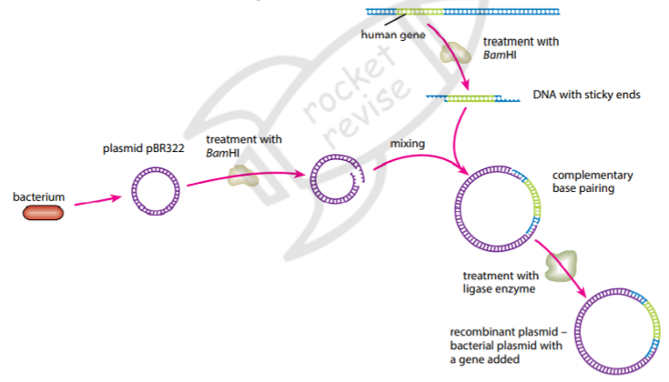
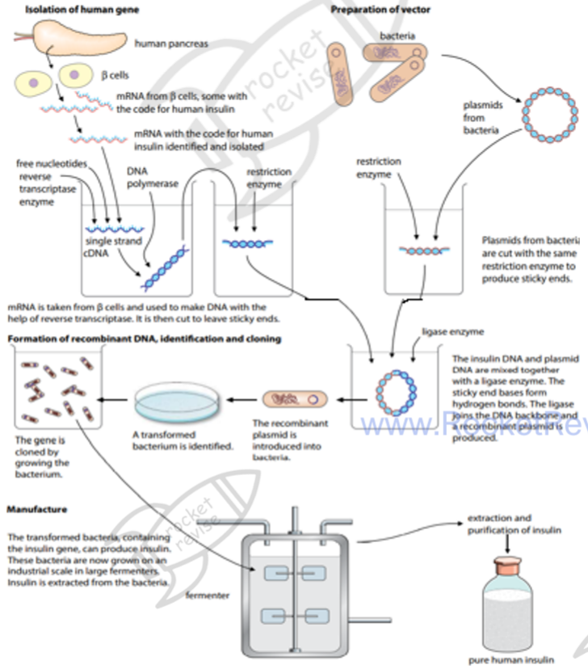
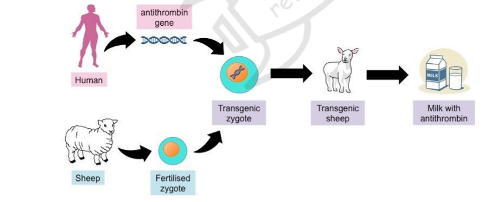
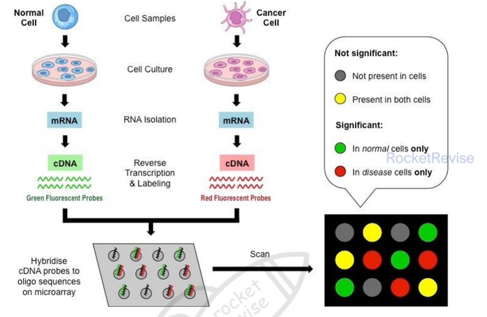

Gene technology
Gene technology cuts out a gene, joins it to a carrier molecule and places it in a new cell, so the cell makes a protein it could not make before. This topic covers the enzymes that make recombinant DNA, how genes are copied and separated, the vectors used to carry them, the production of GMOs in plants, animals and microorganisms, gene therapy, microarrays and bioinformatics, and the risks and benefits of GMOs.
1. Recombinant DNA and GMOs
Recombinant DNA is DNA made by joining pieces from two or more different sources. An organism that contains recombinant DNA is called a genetically modified organism (GMO), or a transgenic organism when the new gene comes from a different species. The genetic code is shared by almost all living things, so a gene from a human can be read and expressed by a bacterium, a plant or a goat, provided it is delivered with the right control sequences.
The process follows a standard sequence. First the gene of interest is identified and isolated. Then it is cut out, copied, joined to a vector, delivered into a host cell, and the cells that have taken it up are identified and cloned. Each step depends on enzymes that either cut DNA or join it together, so those enzymes are the foundation of the technique.
2. Restriction enzymes and ligase
Restriction endonucleases (restriction enzymes) cut the sugar–phosphate backbone of DNA at specific base sequences. Each enzyme recognises a particular short sequence and cuts at that site. Many of these recognition sequences read the same in both directions, so the enzyme cuts both strands in matching places. Some enzymes cut straight across both strands, but many cut in a staggered way and leave short single-stranded overhangs called sticky ends.
Sticky ends are useful because they are complementary. A sticky end cut by a given enzyme will pair with any other sticky end cut by the same enzyme, through hydrogen bonds between complementary bases. This means a gene cut with an enzyme can be inserted into a plasmid cut with the same enzyme. The pairing is only temporary, though, because hydrogen bonds are weak. To make the join permanent, DNA ligase is needed.
DNA ligase forms phosphodiester bonds between the sugar and phosphate groups of adjacent nucleotides, sealing the sugar–phosphate backbone on both strands. Together with the complementary base pairing, it produces a continuous, double-stranded molecule.
Cut the gene out of the source DNA with a restriction enzyme, leaving sticky ends.
The enzyme gives a defined cut, so the gene has known ends.
Cut the plasmid open with the same restriction enzyme.
The plasmid's sticky ends then match the gene's sticky ends.
Mix the gene and the plasmid so that complementary sticky ends pair through hydrogen bonds.
Add DNA ligase to form phosphodiester bonds and seal the backbone.
Without ligase, the join would fall apart because hydrogen bonds are weak.

3. Making copies of genes
A gene can be obtained in three ways. It can be cut from a chromosome with restriction enzymes, it can be copied from mRNA, or it can be made from nucleotides. When the gene is taken from mRNA, the enzyme reverse transcriptase builds a single-stranded DNA copy called cDNA. This copy has no introns, because introns are removed from the mRNA before it leaves the nucleus, so it is the version the host cell can express most easily. DNA polymerase then makes the cDNA double-stranded.
The polymerase chain reaction (PCR) makes many copies of a short DNA sequence in vitro. Each cycle has three steps. The DNA is heated to about 95 °C so the two strands separate. The temperature is lowered so that short primers can bind to the ends of the target sequence. The temperature is then raised to around 72 °C, where a heat-stable DNA polymerase builds a new complementary strand from each primer. Because each cycle doubles the number of copies, the amount of DNA grows exponentially, and a few cycles can produce millions of copies.
4. Gel electrophoresis
Gel electrophoresis separates DNA fragments by size. The DNA is loaded into wells in an agarose gel and an electric current is applied. DNA has a negatively charged phosphate backbone, so the fragments move towards the positive electrode. The gel acts like a sieve: small fragments pass through the gel pores quickly, and large fragments are slowed down. After a set time the fragments have spread into bands, with the smallest furthest from the wells. Comparing the bands with a size marker allows the sizes of the fragments to be estimated, and the bands can be stained to make them visible.
5. Vectors and ways of delivering genes
A vector carries the gene into the host cell. Bacterial plasmids are the usual vector for bacteria. They are small circular pieces of DNA that replicate separately from the chromosome, they are easy to take up and to purify, and they often carry a marker gene, such as an antibiotic resistance gene or a gene for a fluorescent protein. Scientists use the marker to identify cells that have taken up the plasmid. Plasmids are cut open with the same enzyme used to cut the gene, so the recombinant plasmid contains the desired gene, the marker and the bacterial replication origin.
Several methods deliver genes into cells. A gene gun fires DNA coated onto tiny gold or tungsten pellets into cells at high speed. A harmless virus can be used if the gene for viral replication has been removed and replaced with the desired gene; the virus then infects the cell and delivers the gene. Liposomes are small fat vesicles that wrap around the DNA, fuse with the cell membrane and release the DNA into the cytoplasm. They cause fewer side effects than viruses. Microinjection uses a fine glass micropipette to inject DNA directly into the nucleus of a cell. It is precise, but very few cells can be treated, so it is slow and inefficient.
6. Microorganisms and insulin
Microorganisms are cheap to grow and reproduce quickly, so a transferred gene is copied very rapidly when the microorganism is allowed to replicate under ideal conditions. Human insulin is a classic example. The gene is isolated from the beta cells of the pancreas, using the mRNA: reverse transcriptase makes cDNA, and DNA polymerase makes it double-stranded. The cDNA is cut with restriction enzymes, joined to a cut plasmid with ligase, and the recombinant plasmid is inserted into bacteria. The transformed bacteria are grown in a large fermenter, where they produce the human protein, which is then extracted and purified.

Bacteria are used for insulin because they have no introns to remove, they replicate fast and they can be grown in large fermenters. A gene from a eukaryote that has been copied from mRNA is therefore easy for a bacterium to express.
7. Transgenic plants
Transgenic plants are used mainly to produce crops with new traits and, in some research, edible drugs such as vaccines. The most common vector is the Ti plasmid from the soil bacterium Agrobacterium tumefaciens. In nature, this bacterium infects wounds in plants and transfers part of its plasmid, the T-DNA, into the plant chromosome, causing a tumour. Scientists remove the tumour-causing genes, insert the desired gene into the T-DNA, and let the bacterium carry it into plant cells. Infected cells are then cultured, and a whole plant is regenerated from a single cell, so every cell of the new plant carries the foreign gene.
Edible vaccines work in a similar way. A gene from a human pathogen is inserted into a vector and introduced into plant cells, which grow into leaf segments that produce the antigen. Eating the plant material triggers an immune response, so no refrigeration or injection is needed.
8. Transgenic animals
A transgenic animal has a genome that has been changed to carry genes from another species. Transgenic animals are used as disease models and as producers of medicines. To make a transgenic animal that makes a human protein in its milk, scientists isolate the human gene, add a promoter sequence that switches the gene on only in the mammary gland of a lactating female, and inject the construct into a fertilised egg. The egg is placed in a surrogate mother. The resulting animal carries the gene in every cell, and the protein is purified from its milk. The number of animals can be increased by breeding or cloning.

The promoter is essential. Without it, the gene might be expressed in every tissue, and the protein would not appear in the milk. When you describe the production of a protein in milk, name the mammary-specific promoter.
9. Gene therapy
Gene therapy replaces a defective allele with a normal one, so that the genotype and phenotype of the target cells are corrected. There are two forms. Somatic cell therapy treats cells that are not involved in reproduction, for example airway epithelial cells in cystic fibrosis. The normal gene is introduced by a vector such as a virus or a liposome, and it is transcribed and translated into normal protein. Because the treated cells are replaced over time, the treatment has to be repeated. Germ-line therapy repairs the gene in a fertilised egg, so the repaired gene is copied into every daughter cell by mitosis and is passed on to the next generation. It is inherited, which is why it is more controversial.
10. Microarrays and bioinformatics
A DNA microarray is a glass or plastic slide carrying thousands of spots, each containing a known single-stranded DNA sequence. It shows which genes are active in a cell, because active genes make mRNA. To use a microarray, mRNA is collected from two samples: a reference sample of known gene sequence, such as normal cells, and an experimental sample, such as cancer cells. Reverse transcriptase converts each mRNA into cDNA, and each sample is labelled with a different fluorescent dye, green for the reference and red for the experimental sample. The labelled samples are mixed and applied to the slide, where the cDNA binds to the matching probes by complementary base pairing. The slide is then scanned, and the colour of each spot shows the relative expression. Yellow means both samples express the gene equally, red means the experimental sample expresses it more, and green means the reference expresses it more.

Bioinformatics is the development of software, computing tools, algorithms and statistical models to store, organise and analyse raw biological data. Microarrays produce enormous amounts of data, so bioinformatics is needed to find patterns in it. For example, comparing gene expression in healthy and Parkinson's disease tissue would involve many genes at once, and bioinformatics identifies which differences are significant and which are noise. The same tools can be used to work out gene profiles, to find causes of disease and to assess whether a treatment is working.
11. Risks and benefits of GMOs
GMOs offer clear benefits. Crops can be modified to give higher yields or more nutrition, which can help reduce famine and malnutrition. Pest resistance means fewer pesticides are needed, which lowers costs and reduces environmental damage. Industrial enzymes can be made cheaply in GMOs. Disorders can be treated with human proteins, which are safer and more effective than animal proteins. Vaccines made in plant tissue do not need refrigeration, which helps their distribution in areas without it, and drugs made in transgenic plants or animals may be cheaper to produce.
The risks are also real. Genetic pollution can occur when GM plants cross with conventional plants of the same species or with wild relatives, and the natural genome can be disturbed. Herbicide-resistant crops could interbreed with wild plants and create superweeds, which would force farmers to use more selective herbicides and damage food chains. The use of antibiotic resistance genes as markers may contribute to resistance in microbes. Some GM plants may not produce fertile seed, so farmers must buy new seed from biotechnology companies each year. Some people worry about the long-term and unforeseen effects of GMOs, the possibility that a modified plant or animal could be toxic or cause allergies, and the ethical view that modifying animals purely for human benefit is wrong.
When asked to discuss GM crops, give points for and against and link each to its evidence. For example, fewer pesticides are needed and fewer pests survive on resistant crops, but pollen transfer may spread the gene to wild relatives. A balanced answer states the benefit, then the risk, then which one a given situation makes more important.
12. Quick checks
What is the role of DNA ligase in making recombinant DNA?
DNA ligase joins the backbone of the gene to the plasmid, making phosphodiester bonds. Restriction enzymes do the cutting, reverse transcriptase makes cDNA and heat separates strands in PCR. Hydrogen bonds between sticky ends hold the pieces together only temporarily.
In a microarray experiment, what does a red spot show?
The experimental sample is labelled red, so a red spot means more of that mRNA was present in it. Yellow means equal expression, and green means the reference sample expressed the gene more. A spot with no colour would mean no expression.
Why is a mammary-specific promoter included in a construct used to make a transgenic animal?
The promoter controls where the gene is expressed. Placing the human gene behind a mammary-specific promoter means the protein is made in the milk, where it can be collected, and not in every tissue.
In gel electrophoresis, why do DNA fragments move towards the positive electrode?
The phosphate groups in the DNA backbone carry a negative charge, so the fragments are pulled towards the positive electrode. The gel then separates them by size, with the smallest fragments travelling furthest.